En la región de la Huasteca, al oriente de San Luis Potosí viven los teenek, comúnmente conocidos como huastecos, cuyo nombre hace referencia a “los que viven en el campo, con su idioma, sangre y comparten la idea”, se les puede reconocer en los sitios turísticos, ataviados con coloridos trajes y grandes tocados en las cabezas de las mujeres, ofreciendo cestas y artesanías a los turistas.
Los teenek, asentados principalmente en los municipios de Aquismón, Tanlajás, Ciudad Valles, Huehuetlán, Tancanhuitz, San Antonio, Tampamolón y San Vicente Tancuayalab, por mencionar algunos en San Luis Potosí, tienen antecedentes de no solo haber dominado la región, sino estados como Veracruz, Hidalgo, Puebla y Tamaulipas.
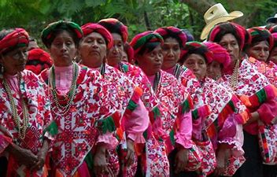
A las artesanas huastecas o tenek lo que más les gusta bordar, sobre manta, son las bellas talegas que se cuelgan al hombro y los vistosos quexquémitl, ya que forman parte de su atuendo tradicional (el quexquémitl que carece de flecos indica que la mujer que lo lleva es soltera); los diseños de los bordados, en general, reproducen diferentes aspectos y personajes de su mitología.
Mas sobre la cultura tenek
Son las bellas talegas que se cuelgan al hombro y los vistosos quexquémitl, ya que forman parte de su atuendo tradicional (el quexquémitl que carece de flecos indica que la mujer que lo lleva es soltera); los diseños de los bordados, en general, reproducen diferentes aspectos y personajes de su mitología.
Por otro lado, cuando nace un niño se le lleva una talega en la que se borda una bola roja, que representa a quien otorga la vida, pero si es mujer entonces la bola debe ser verde, que significa fertilidad. Cuando la persona muere se le borda la misma talega que en su nacimiento pero se le agrega una estrella, que simboliza los cuatro puntos cardinales. .
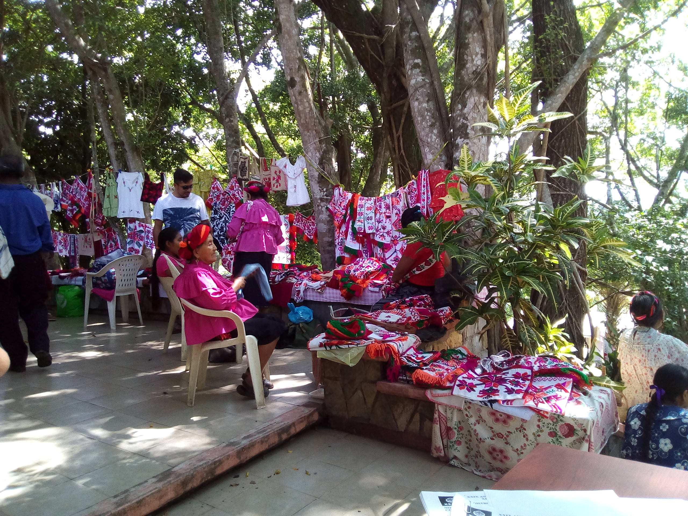
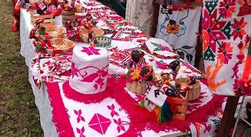
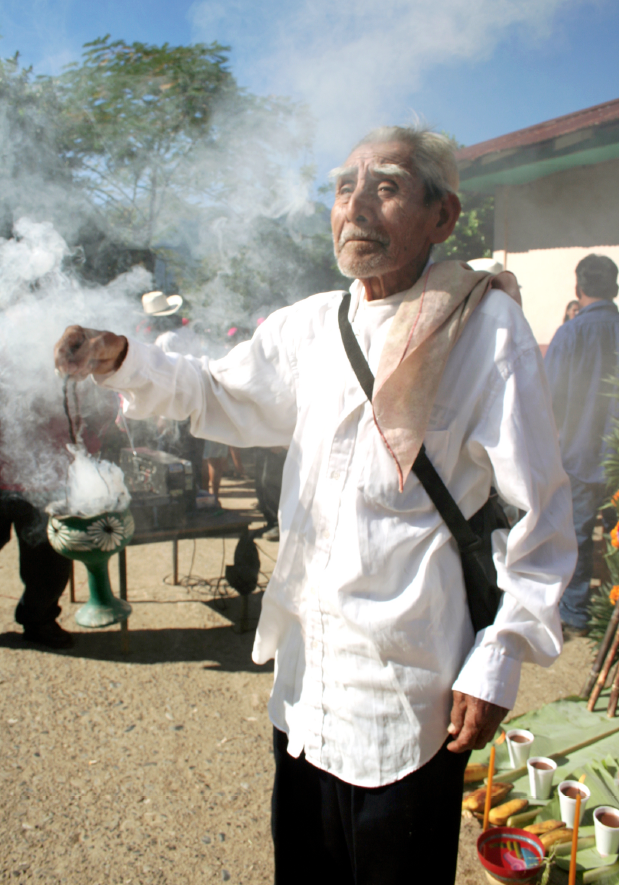
El paisaje en la huasteca
La huasteca es una region denominada por rios, cascadas y abismos donde podrias gozar de la conexion franca con la naturaleza
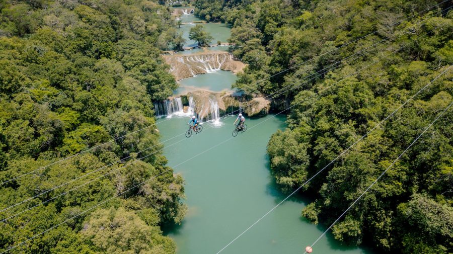 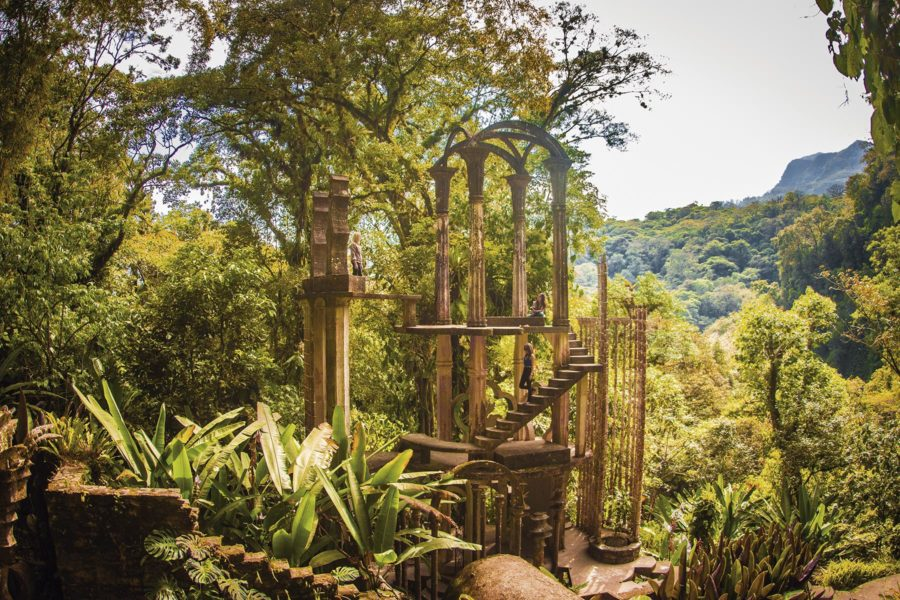
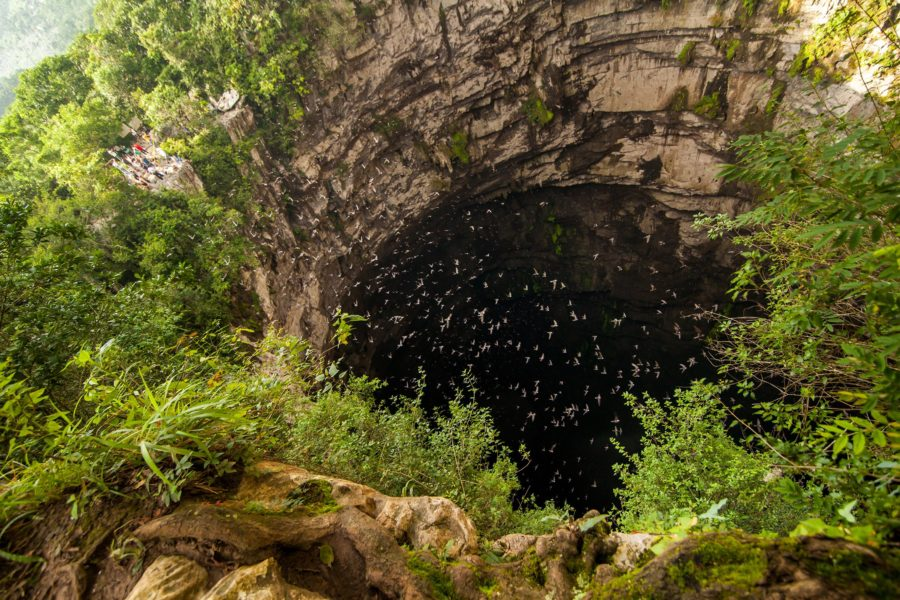 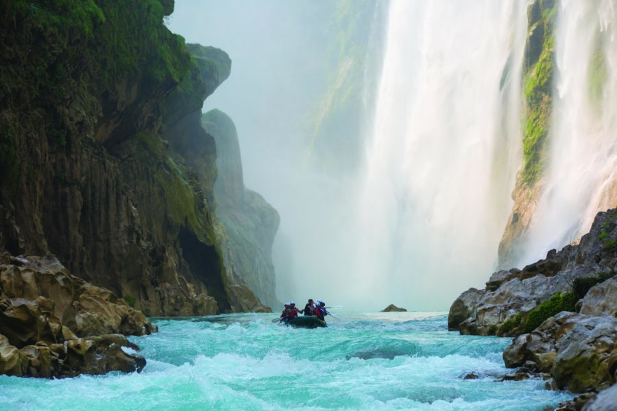
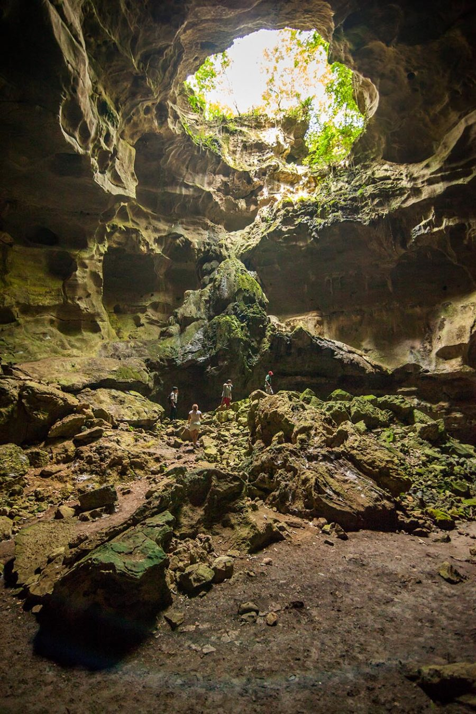 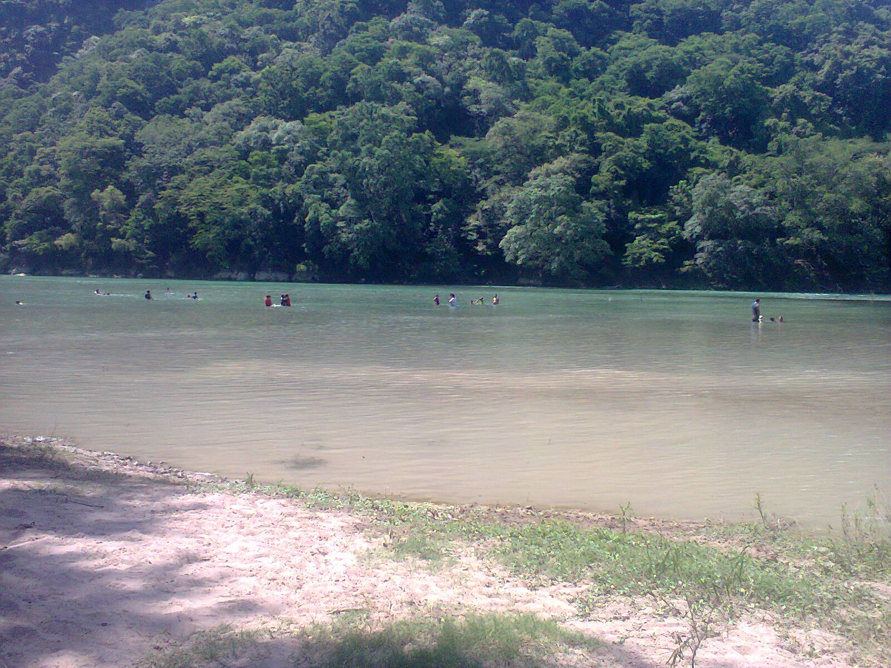
Sin duda la husteca potosina..
Un lugar esplendoroso por sus paisajes y exuberante vegetación, por sus ríos y espectaculares cascadas, por sus cuevas y profundos abismos.
Sin duda, también atrae la magia de sus sitios arqueológicos y la grandeza de sus etnias que al vivir sus costumbres y tradiciones prehispánicas nos remontan a un pasado que sigue presente en cada rincón de esta fascinante región de México.
La gastronomia
la Huasteca Potosina, la gastronomía es inigualable, entre algunas de sus delicias culinarias destacan: las acamayas, especie de langostino de agua dulce; los quesos de bola rellenos de crema; los bocoles; el gigantesco zacahuil, que es un tamal que puede pesar hasta 30 kilos, envuelto en hojas de plátano y relleno de pollo, pavo, y lomo de puerco; además de las tradicionales enchiladas huastecas acompañadas de cecina.
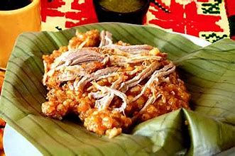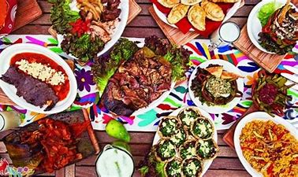
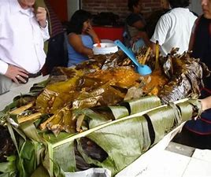
Mas texto
Sin duda la hustaca potosina, has sido reconocida mundialmente como uno de los lugares mas bonitos por sus atractivos turisticos, tradiciones,costumbres, sus gastronomia y sus actividades.
La entidad potosina es un lugar lleno de contrastes, caracterizado por las bellezas de sus paisajes, sus acogedores climas, la diversidad cultural y multiétnica, sus riquezas arqueológicas, artesanías y folklore, pero sobre todo de gente amable, de alma generosa y noble de corazón. ¿Qué esperas para vistarla?